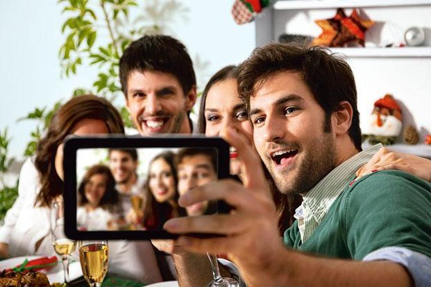

<div class="modal-dialog">
	<div class="modal-content">
		<div class="modal-header">
			<button type="button" class="close" data-dismiss="modal"
				aria-hidden="true">&times;</button>
			<h4 class="modal-title" id="appointmentModalLabel">Invest in
				real friendships</h4>
		</div>
		<div class="modal-body">
			<div class="row">
				<div class="col-lg-6  col-md-6 col-sm-6 blog-image">
					<br />
					<h5>Having a few good friends instead of a big network of
						acquaintances provides a sense of security and fosters self-esteem</h5>
				</div>
				<div class="col-lg-6 col-md-6 col-sm-6 ">
					<h5>
						Published in <a
							href="http://www.livemint.com/Leisure/nK0EtWJbcLYSkdp8u1PLrM/Invest-in-real-friendships.html"
							target="_blank">Mint-Leading Business Newspaper</a> <br><i>Mon, Aug 18 2014. 08 14 PM
						</i>
					</h5>
					<p>Talking to a friend in person or over the phone is
						qualitatively far superior to a social media interaction</p>
					<ul class="shareIcons">
						<li><a href="https://twitter.com/DrSujWell" target="_blank"><i
								class="fa fa-twitter"></i></a></li>
						<li><a href="https://www.facebook.com/wellnessbydrsujata"
							target="_blank"><i class="fa fa-facebook"></i></a></li>
						<li><a
							href="https://www.linkedin.com/profile/view?id=12822870&authType=NAME_SEARCH&authToken=yqYt&locale=en_US&trk=tyah&trkInfo=clickedVertical%3Amynetwork%2Cidx%3A1-1-1%2CtarId%3A1436516597183%2Ctas%3Asujata%20kelk"
							target="_blank"><i class="fa fa-linkedin"></i></a></li>
					</ul>
				</div>

			</div>
			<div class="row">
				<div class="col-lg-12  blog-content">
					<p>My close friends keep me grounded, help me stay centred,
						remind me of what is important and make me laugh, a lot. Good
						friends are a necessity, particularly in the times we live in. Our
						everyday lives are hectic, filled with physical and emotional
						stresses that we increasingly have to deal with in isolation.
						Social media has taken over our lives and while that means we are
						connected to more people and have more friends than ever before,
						we aren’t necessarily connecting with our friends meaningfully.</p>
					<p>Saumya Pant, an assistant professor at Ahmedabad’s Mudra
						Institute of Communications (MICA), who is leading a social media
						study at the institute, says on email: “At MICA, we have been
						researching the wide use of Facebook by the youth in India. Our
						preliminary findings are reinforcing the value of relationships
						both online and offline. Our research suggests that it seems to be
						more important to have a few good friends instead of a large
						network of acquaintances since deep relationships provide a sense
						of security and foster higher self-esteem, keeping our hearts and
						minds healthy.”</p>
					<p>Anjali Chhabria, psychiatrist and founder of counselling
						centre Mindtemple, Mumbai, agrees. She says on phone, “Interacting
						with an online friend via social media versus meeting a friend in
						person is like watching pornography versus engaging in the real
						thing.” In other words, talking to a friend in person or over the
						phone is qualitatively far superior to a social media interaction
						when it comes to the impact it has on your happiness and sense of
						well-being.</p>
					<p>
						A Canadian survey of 5,000 people published online in September
						found that the number of real-life friends correlated positively
						with feelings of happiness, irrespective of income, demographic
						variables and differences in personality. And doubling the number
						of friends in real life increased happiness as much as a 50%
						increase in income would achieve. The survey, published in the
						journal <i>PLoS One</i>, also found that the number of social
						media friends had absolutely no correlation with subjective
						well-being or feeling good about yourself, but having real
						friends, especially if you were single or divorced, did.
					</p>
					<p>Sometimes it isn’t possible to meet a friend face to face.
						Sometimes friends are a phone call away and that’s fine too, says
						New Delhi-based psychiatrist Sanjay Chugh. He compares the
						emotions building in our minds to pressure building up in a
						pressure cooker. “Friends are like safety valves. Speaking to them
						over the phone or in person helps to release the emotional
						build-up and helps keep us on an even and healthy psychological
						footing.”</p>
					<p>
						Staying in touch with close friends appears to play a role in
						longevity too.Dan Buettner, explorer and educator, has researched
						the way the world’s healthiest and longest-living people lead
						their lives with physicians and demographers. In his book, <i>The
							Blue Zones—9 Lessons For Living Longer From The People Who’ve
							Lived The Longest</i>, Buettner writes: “Scientific studies suggest
						that only about 25% of how long we live is dictated by genes,
						according to the famous studies of Danish twins. The other 75% is
						determined by our lifestyle and the everyday choices we make.”
					</p>
					<p>
						Buettner has found common ground among five long-lived
						communities, geographically spread out across the globe though
						they may be, like the Sardinians of Italy or the Okinawans of
						Japan. One of those commonalities is ritualized companionship with
						close friends. He finds that in all these communities where people
						seem to exude a particular calmness despite the stresses that life
						brings, there is social connectedness. Okinawans have <i>moais</i>,
						groups of friends they spend time with every afternoon, and
						Sardinians finish their work day at the local bar, where they meet
						friends. These long-lived communities aren’t texting each other
						regularly or staying in touch via social media; they are taking
						the time and making the effort to meet each other in a ritualized
						way.
					</p>
					<p>Recently, a close friend defined friendship in a similar
						way: “Friends are not just for Facebook likes and Instagram
						shares. Real-time friendships give us the space to be, just be.
						And face-to-face interactions with our friends allow us to
						continue our own process of discovery about ourselves and our
						lives.”</p>
					<p>I couldn’t have put it better myself.</p>
					<p>
						<i>Sujata Kelkar Shetty, PhD, writes on public health issues
							and is a research scientist trained at the National Institutes of
							Health in Bethesda, US.</i>
					</p>
				</div>

			</div>
		</div>

	</div>
</div>